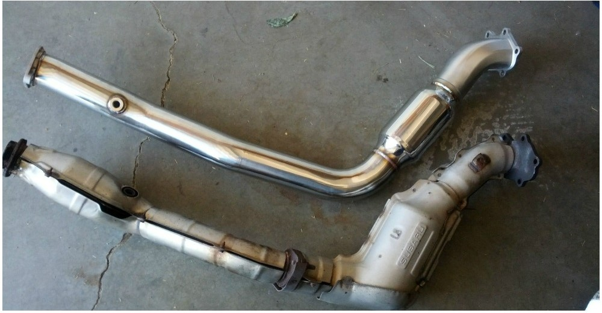

The Subaru STI 2.5L EJ25 engine was offered in the United States starting in 2004 thru today. The flat turbo engine is a
popular engine among Subaru enthusiasts. From the factory, 2004-2007 models produced 300 braking horse power at 6000
RPM, with 300 lb. ft of torque, at 4000 RPM, and with current models putting out 310 horse power at 6,000 RPM with 290
lb-ft of torque at 4,000 RPM.
Search your Subaru VIN here
Please share your information of WRX STI

2004 WRX STI Catalytic Converter
This is an example of stock 2004 - 2007 WRX STI catalytic converters, and an unkown brand of turbo down-pipe that is
commonly installed in the catalytic converters place.
Acura Integra GSR 1.8L B18C1
The Acura Integra GSR 1.8L B18C1 was offered in the United States from 1994 to 2001 producing 170 horse power at 7600
RPM and with 128 lb-ft of torque at 6200 RPM.
Search your Acura VIN here
Please share your information of the Integra GSR
Chevrolet 6.2L LS3
The Chevrolet 6.2L LS3 V8 engine was available in the 2009-2015 Camaro Super Sport, and the 2008-2013 Corvette. In the
Camaro SS, the LS3 put out 426 horse power at 5900 RPM, with 420 lb-ft of torque t 4600 RPM. In the Corvette, the LS3
had a horse power rating between 430-436 at 5900 RPM, and a torque rating between 424-428 lb-ft, depending on the
exhasut type.
Search your Chevrolet VIN here
Please share your information of the Chevrolet LS3
Honda Civic Si 1.6L B16A2
The Honda 1.6L B16A2 was offered in the United States in 1996-1997 Honda Civic Del Sols, and in the 1999-2000 Civic Si.
The B16A2 had a horse power rating of 160 at 7600 RPM, with a torque rating of 111 lb-ft at 6500 RPM.